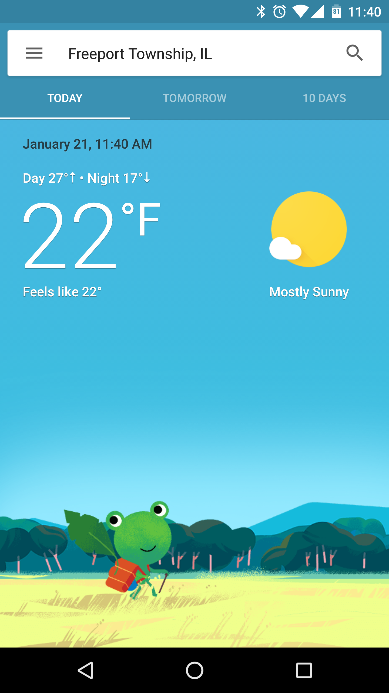

I generally get my weather from google using a simple google search along the lines of "weather chicago".
In the summer time especially, I constantly check the weather because I sweat a lot and can get pretty uncomfortable.
I don't check the weather as much in the winter since I don't really sweat, and in general I can deal with cold temperatures.
I enjoy this sort of minimalist visualization of the weather because it has all that I need. It has the temperature for the day, the night
